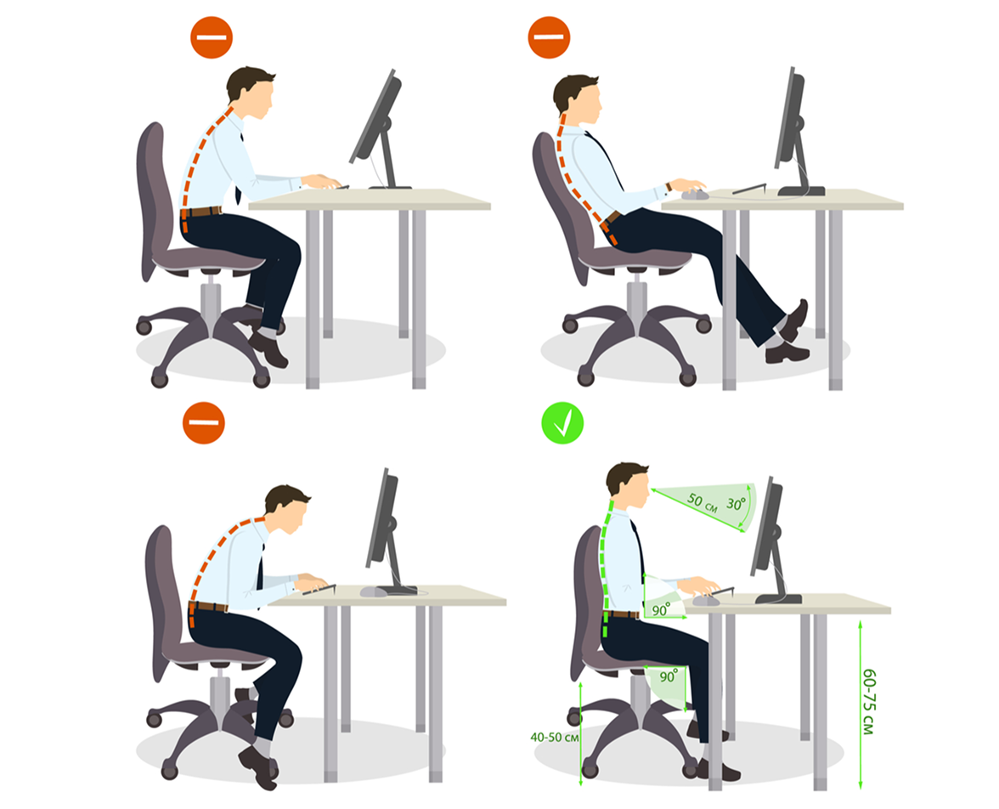

The Project
This was the main project during my Erasmus semester in the Netherlands. I was in a group of three, and our project was to design a tool or a system for the university’s new building, which gathering, storing and displaying sensor data. The building is called Emerging Technologies Playground, and made as a hybrid learning environment, where students are working on projects together using innovative technologies.


The Proccess
One of the main point of this assignment was us to learn how to manage a long-term project in a well-structured way. We had to make a project canvas to plan, how the project should progress from week to week and also find a metholodgy, that defines our working process. We chose the double diamond process, which contains 4 main steps: discover, define, develop and deliver.
The Double Diamond
Map the building
Talk with the students
Research about sensors (online/in the university)
Issue 1: Students need more ergonomic workspace
Issue 2: Hard to orientate in the building
Midterm Presentation
Ultrasonic distance sensor test
Grove-round force sensor test
Visual concepts for the map
Program the sensor
Program a rough prototype
Final Presentation
The Result
During our discovery process, we found out, that the whole building is a huge room, with plenty of tables for each project. There wasn’t anything there, that can help people, what are the groups working on, even students wasn’t really familiar with eachother’s project.
Started with this conlcusion, we made a prototype of an interactive map, where people can discover what kind of projects belongs to each table. With the use of grove-round sensors on the chairs, they also see if students are currently working there. Therefore, if someone came to visit a certain group, he or she knows if they are available or not. The map not only helps the visitors, but also the students, who can find, which group has people with similar expertise, so if they stuck with their project, they will know, where they should look for help.